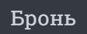

ЗВІТИ З ЛАБОРАТОРНИХ РОБІТ
З ДИСЦИПЛИНИ "WEB-ОРІЄНТОВНІ ТЕХНОЛОГІЇ.
ОСНОВИ FRONTEND та BACKEND РОЗРОБОК"
БРИГАДА №18
Cтуденти гр. ІО-06: Вигівський Нікіта, Панкін Владислав, Яровий Олександр
HTML код: <a href="menu.html" class="main_page_top_buttons">Меню</a>
CSS код:
a {
text-decoration: none;
color: #ced4da;
transition:all 0.7s ease;
border-bottom: 2px solid transparent;
}
Вигляд елемента:
